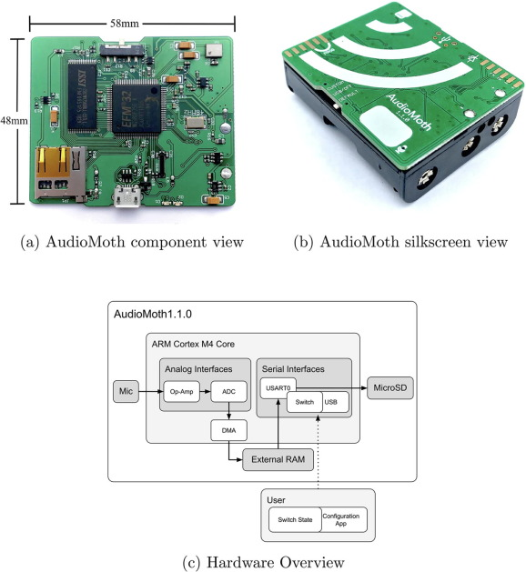

d3 = require("d3@7")
format = d3.format(".01%")
// load data
bird_freq = await FileAttachment("data/may_june_chorus_2024.csv").csv({typed: true});
bird_freq_filt = bird_freq.filter((d) => d.freq > 0.001)North American bird populations have declined by about 29% since 1970 (Rosenberg et al. 2019), a staggering statistic. The drivers behind this decline are likely related to habitat loss and environmental stress that could include effects from artificial light, noise, air pollution, and disturbance. But being able to estimate trends in bird populations requires long-term monitoring programs, and opportunistic citizen science data are gaining traction in their utility to supplement such monitoring.
With the increase in low-cost monitoring tools, like the AudioMoth, it has never been easier for citizen science to make an impact on long-term scientific research. The AudioMoth is an acoustic recording device that allows the everyday Joe Shmoe to acoustically monitor wildlife in their own backyard. The AudioMoth is small, similar in size to a credit card, with a built-in microphone, SD storage card, and microprocessor. All of that is to say that the AudioMoth can be programmed to record during certain times of day, like the morning chorus, for an extended period.

I programmed my AudioMoth to record for 3 hours every morning (5:30 am - 8:30 am) starting on May 12 and ending on June 15. My goal was to understand what birds were using or moving through my backyard during spring migration. I finally got around to processing each recording using BirdNet-Analyzer, which can detect bird calls or songs from the audio and assign those to species. Below is a graph showing the relative frequency of detected bird occurrences in my backyard over the course of a month (give or take). So cool!
Next step is to peform a a little QA/QC on the detections. I have heard or seen every species that BirdNet detected in my backyard, except for Scarlet Tanagers (that can sound like American Robins) and Black-throated Green Warblers (BTNWs). I spot checked a few of the recordings, where BirdNet detected BTNWs, and I did hear that characteristic “zee-zee-zee-zooo-zeet” song. So I’m fairly confident the AudioMoth picked up and BirdNet detected some BTNWs that were passing by :)